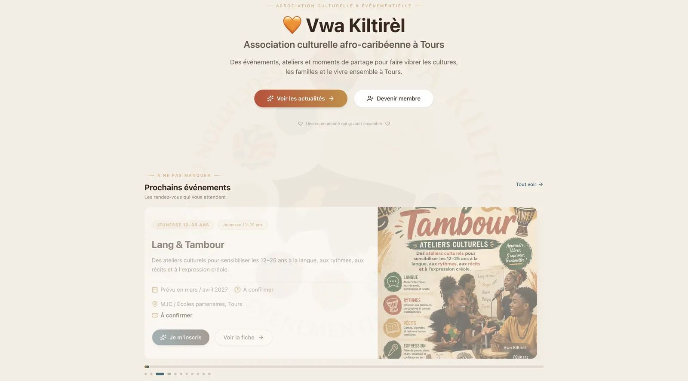

Le point de départ
Donner à une jeune association une vitrine chaleureuse et autonome, que les bénévoles peuvent faire vivre sans compétences techniques.

Vwa Kiltirèl est une association loi 1901 basée à Tours qui transmet les cultures afro-descendantes, créoles et caribéennes à travers des événements, des ateliers et des moments de partage.
Le site présente l'association et son programme (Racines & Vibrations, Lang & Tambour, Saveurs & Savoirs…), et permet d'adhérer, de faire un don ou de s'inscrire à la newsletter. Un espace d'administration permet aux bénévoles de publier événements, actualités et médias en toute autonomie.
Programme annuel, fiches événements et inscriptions.
Photos et vidéos des événements passés.
Devenir membre ou soutenir l'association en ligne.
Inscription et désinscription conformes RGPD.
Articles publiés depuis l'espace d'administration.
Gestion des contenus par les bénévoles, sans code.
Donner à une jeune association une vitrine chaleureuse et autonome, que les bénévoles peuvent faire vivre sans compétences techniques.
Site Next.js avec espace d'administration pour publier événements, actualités et médias, adhésion et dons en ligne, newsletter conforme RGPD et SEO soigné.
Site en ligne de l'association.
Consultation gratuite de 30 minutes pour cadrer votre projet. Réponse sous 24 h ouvrées.
Démarrer un projet